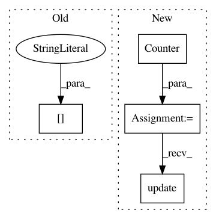

4794be6f7e3827228b6e0dc9b1cfe432a3ecdeb3,beginner_source/text_sentiment_ngrams_tutorial.py,,,#,44
Before Change
import os
if not os.path.isdir("./.data"):
os.mkdir("./.data")
train_dataset, test_dataset = text_classification.DATASETS["AG_NEWS"](
root="./.data", ngrams=NGRAMS, vocab=None)
BATCH_SIZE = 16
device = torch.device("cuda" if torch.cuda.is_available() else "cpu")
After Change
tokenizer = get_tokenizer("basic_english")
train_iter = AG_NEWS(split="train")
counter = Counter()
for (label, line) in train_iter:
counter.update(tokenizer(line))
vocab = Vocab(counter, min_freq=1)
////////////////////////////////////////////////////////////////////////////////////////////////////////////////////////////////////////////
In pattern: SUPERPATTERN
Frequency: 3
Non-data size: 4
Instances
Project Name: pytorch/tutorials
Commit Name: 4794be6f7e3827228b6e0dc9b1cfe432a3ecdeb3
Time: 2021-03-04
Author: brianjo@fb.com
File Name: beginner_source/text_sentiment_ngrams_tutorial.py
Class Name:
Method Name:
Project Name: chartbeat-labs/textacy
Commit Name: a8f7080fbcc91a80391f93c82e21238fc6f82823
Time: 2017-11-28
Author: burton@chartbeat.com
File Name: tests/test_extract.py
Class Name: ExtractTestCase
Method Name: test_words_min_freq
Project Name: chartbeat-labs/textacy
Commit Name: f127dccf797744d04255582e89bfac5163da5e6e
Time: 2017-11-30
Author: burton@chartbeat.com
File Name: tests/test_extract.py
Class Name: ExtractTestCase
Method Name: test_words_min_freq